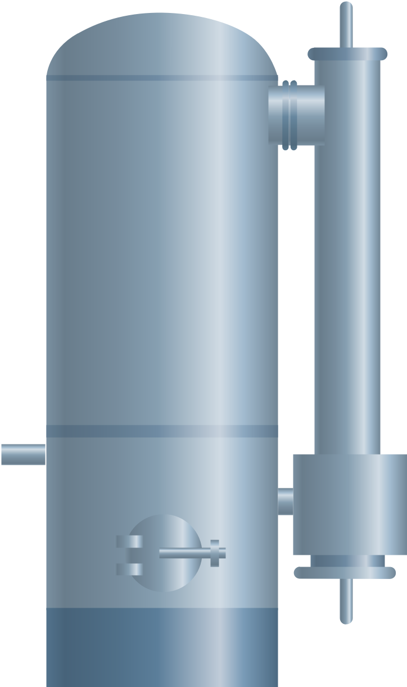
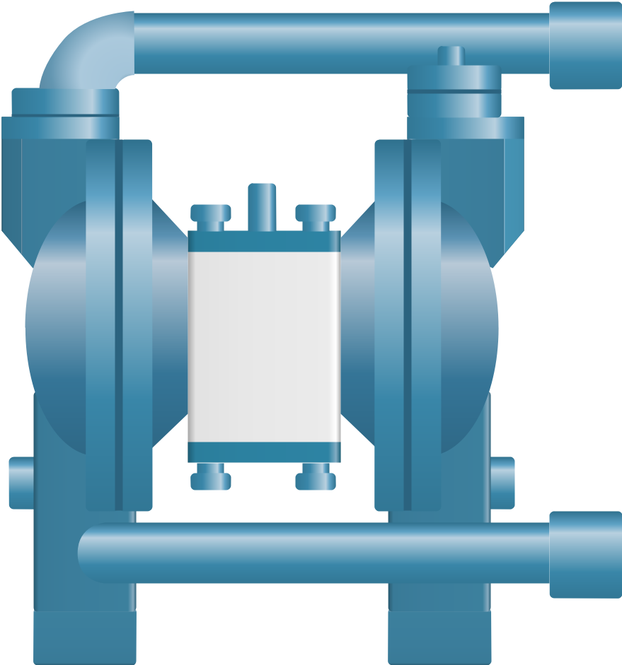
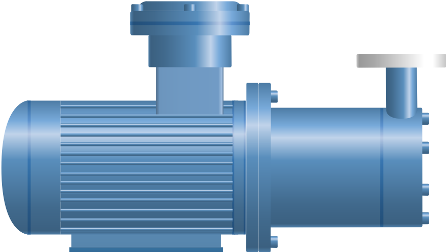
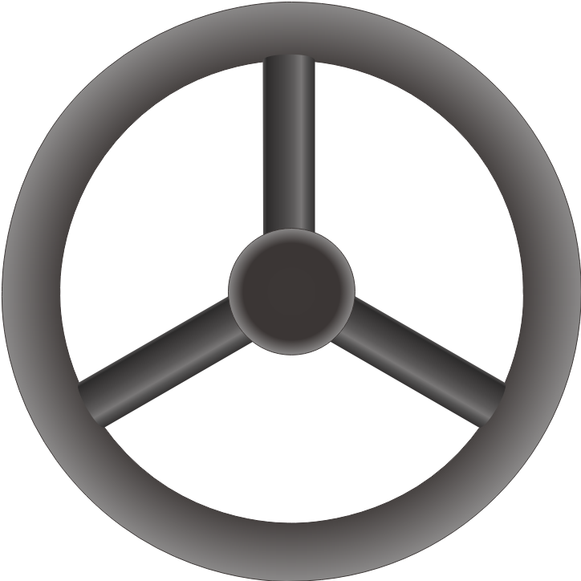
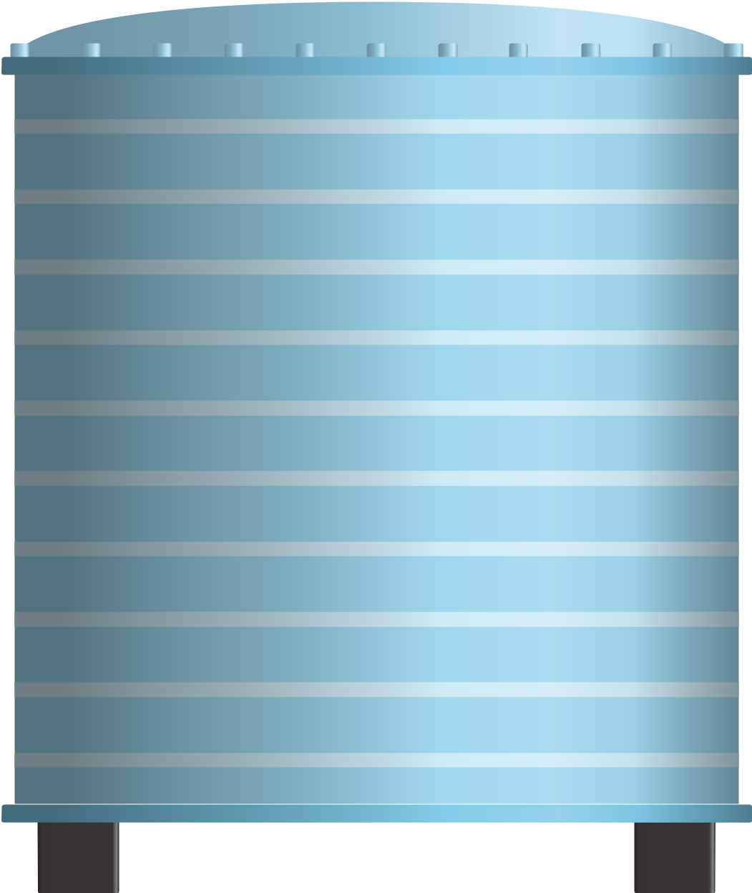
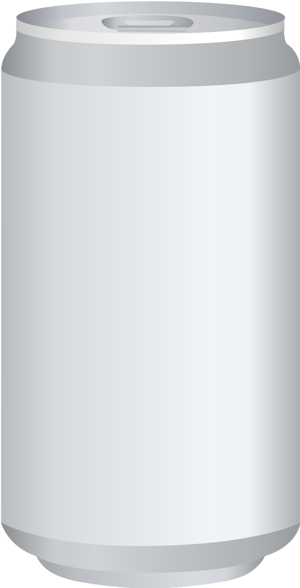
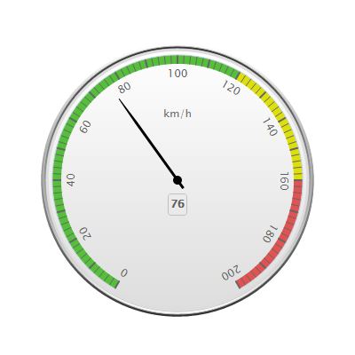
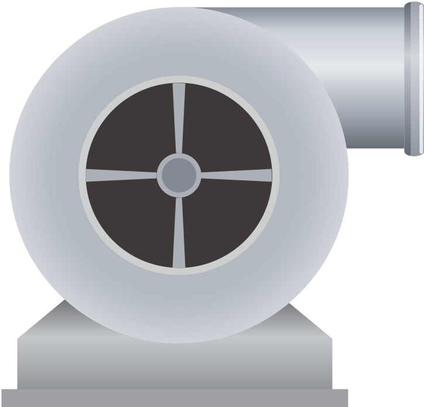

一次侧 / 热源实时
一次供水温度{{p1.supply}} ℃
一次回水温度{{p1.return}} ℃
一次侧压力{{p1.pressure}} MPa
供热量{{p1.heat}} MW
调节阀开度{{p1.valve}} %
设备状态在线 {{online}}/{{total}}
{{kpi.s2t}}℃ · 设定 60
{{kpi.pumpHz}}Hz
{{kpi.makeup}}m³/h
{{alarms}}1 条未确认
工艺组态图iotview 位图图元 · 状态用光环/角标表达

板式换热器 E-01
一次 130→75 ℃

循环泵 P-01
42.0 Hz · 运行

补水泵 P-02
补水 2.3 m³/h

调节阀 V-01
开度 68%

补水罐 T-01
液位 72%

流量计 FT-01
128 m³/h

压力表 PT-01
0.42 MPa

鼓风机 F-01 ▲
振动偏高
一次供水 130℃
一次回水 75℃
二次供水 60℃
二次回水 45℃
补水
二次侧 / 用户实时
二次供水温度{{p2.supply}} ℃
二次回水温度{{p2.return}} ℃
二次侧压力{{p2.pressure}} MPa
循环流量{{p2.flow}} m³/h
补水液位{{p2.level}} %
报警与事件按优先级
▲ 鼓风机振动偏高14:22
一次回水温度正常13:58
补水泵自动补水13:40
数据链路正常PLC